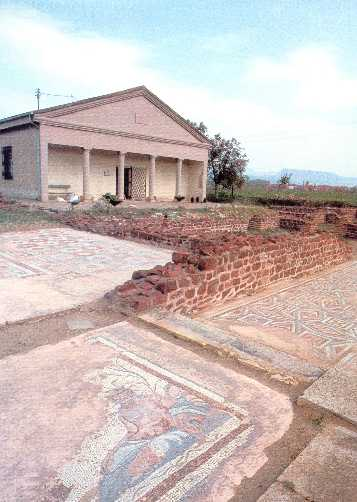

On this page you will get acquainted with the history of the city
Life on the territory of the city of Nis dates back to prehistoric times.Remains from the Paleolithic, found at the Kremenac site, are kept in the archeological collection of the National Museum in Nis. Tombs from Medoševac and a large settlement, located next to the ancient site of Mediana, were found from the Bronze Age.
Procopius writes in the work On Buildings that Emperor Justinian I rebuilt Nais, built 32 new fortifications, which he states with his names, and renovated 7 fortifications. In addition to this, Procopius in the work On Wars informs about the first incursions of Slavs across the Danube into the vicinity of Nais around 550-551. During the Middle Ages, Nis was in the sleeves of the Serbian monarch Stefan Nemanja only in 1331
Nis fell again under Ottoman rule in 1448 and remained in the Ottoman Empire for the next 245 years. In this period, Nis was one of the seats of the Turkish military and civilian authorities, and in the longest period it was located in the Smederevo Sandzak. A few days after June 20, 1521, a large fire broke out in Nis. The city could have been completely destroyed had Beglerbeg Ahmed Pasha, who was in command of the Turkish army against Hungary at the time, not come to the rescue at the last minute [
The Turkish fortress was built on the remains of an ancient and medieval fortress. [2] In the ancient period,
the Nis fortification is mentioned as a strong castrum, which the Roman historian of the 6th century, Amijan
Marcellin, claims to have been besieged several times, but he never surrendered or would be conquered.
Today's fortification is of the artillery type and was built by the Ottomans in the period from 1719 to 1723
on
the site of an ancient and medieval fortification.
Bali Beg's mosque
"Ćele-kula" is a monument from the First Serbian Uprising, which was built by the then Turkish
government in Serbia
as a sign of revenge from the skulls of the killed Serbian warriors, led by Stevan Sinđelić, in the battle of
Čegra. It is located 4 km from the center of Nis, on the road to Niska Banja. It is classified as a cultural
monument of exceptional importance for the Republic of Serbia and today it is a museum building.
In order to justify so much loss of his troops during insurrection and intoxicated with victory, Hurshid-pasha
from Nis ordered that
the skins from the heads of the killed Serbs be skinned, filled with straw and cotton and then sent to
Constantinople to show how to treat the rebel paradise.
For each head brought, Hurshid-pasha gave 25 groschen. In order to intimidate the Serbs once and for all,
Hurshid-pasha ordered that a stone tower be built on the east side of Nis as a warning and that the remaining
skulls of the fallen soldiers be built into its walls, "so that the middle of the tower was simple, made of
stone and lime." the heads of Serbian soldiers to turn into the field and rise outside. "
Although in the second half of the 19th century, one of the modernizers of the Turkish state, Mithat Pasha, made
the decision to demolish the tower, this was not done due to the intervention of the Turks of Nis. [1] In 1937,
during the celebration of the sixtieth anniversary of the liberation of Nis from the Turks, by cleaning the
central part of the building, several skulls were found, which were re-installed in the tower. [3] Today, only
58 skulls remain, and one of them is especially singled out on the pedestal, as the skull of the leader of the
uprising, Stevan Sindjelic.
In 2014, the American magazine "Mental Floss" listed the Cele Tower as the largest building made of human bones.